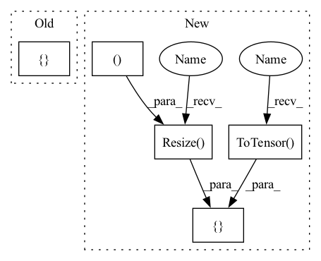

Pattern ID :22456

Before Change
self._debug = debug
// indexed classes labels
self._groundtruth = ["0","1","2","3","4","5","6","7","8","9", // 10 classes (MNIST)
"A","B","C","D","E","F","G","H","I","J","K","L","M","N","O","P","Q","R","S","T","U","V","W","X","Y","Z", // 36 classes (custom dataset)
"a","b","d","e","f","g","h","n","q","r","t"] // 47 classes (EMNIST bymerge)
self._device = torch.device("cuda:0" if torch.cuda.is_available() and use_cuda else "cpu")
logging.info(f"Using {self._device} device for predictions.")
After Change
self.chars = list("1234567890abcdefghijklmnopqrstuvwxyzABCDEFGHIJKLMNOPQRSTUVWXYZ")
self.img_trans = transforms.Compose([
transforms.ToPILImage()
,transforms.Resize((self.img_height, self.img_width))
,transforms.Grayscale(num_output_channels=3)
,transforms.ToTensor()
,lambda x: x < threshold // thresholding (for "<" operator input image should have white background)
,lambda x: x.float()
])
self.device = torch.device("cuda" if torch.cuda.is_available() and use_cuda else "cpu")
In pattern: SUPERPATTERN
Frequency: 3
Non-data size: 5
Instances
Fragment ID: 71019970
Project Name: andreybicalho/vrpdr
Commit Name: daf497818875e24e9502e761bea83e6cbed1f909
Time: 2020-06-17
Author: andreybicalho@gmail.com
File Name: src/ocr.py
M Class Name: OCR
N Class Name: OCR
M Method Name: __init__(5)
N Method Name: __init__(5)
M Parent Class:
N Parent Class:
M File Name: src/ocr.py
N File Name: src/ocr.py
M Start Line: 12
M End Line: 30
N Start Line: 15
N End Line: 39
'>
Before Change
def val_transforms():
trans_list = [ToTensor()]
return transforms.Compose(trans_list)
After Change
def val_transforms(width, height):
trans_list = [
transforms.Resize((height, width)),
transforms.ToTensor()
]
return transforms.Compose(trans_list)
'>
Fragment ID: 71019969
Project Name: velebit-ai/covid-next-pytorch
Commit Name: a95ed43a8ae00319255f288656a81b27a1d83d8f
Time: 2020-03-26
Author: bartol.freskura@velebit.ai
File Name: data/transforms.py
M Class Name: AnonimousClass
N Class Name: AnonimousClass
M Method Name: val_transforms(2)
N Method Name: val_transforms(0)
M Parent Class:
N Parent Class:
M File Name: data/transforms.py
N File Name: data/transforms.py
M Start Line: 21
M End Line: 21
N Start Line: 21
N End Line: 25
'>
Before Change
def train_transforms():
trans_list = [ToTensor()]
return transforms.Compose(trans_list)
After Change
def train_transforms(width, height):
trans_list = [
transforms.Resize((height, width)),
transforms.RandomVerticalFlip(p=0.5),
transforms.RandomHorizontalFlip(p=0.5),
transforms.RandomApply([
transforms.RandomAffine(degrees=20,
translate=(0.15, 0.15),
scale=(0.8, 1.2),
shear=5)], p=0.5),
transforms.RandomApply([
transforms.ColorJitter(brightness=0.3, contrast=0.3)], p=0.5),
transforms.ToTensor()
]
return transforms.Compose(trans_list)
'>
Fragment ID: 71019968
Project Name: velebit-ai/covid-next-pytorch
Commit Name: a95ed43a8ae00319255f288656a81b27a1d83d8f
Time: 2020-03-26
Author: bartol.freskura@velebit.ai
File Name: data/transforms.py
M Class Name: AnonimousClass
N Class Name: AnonimousClass
M Method Name: train_transforms(2)
N Method Name: train_transforms(0)
M Parent Class:
N Parent Class:
M File Name: data/transforms.py
N File Name: data/transforms.py
M Start Line: 16
M End Line: 16
N Start Line: 4
N End Line: 17